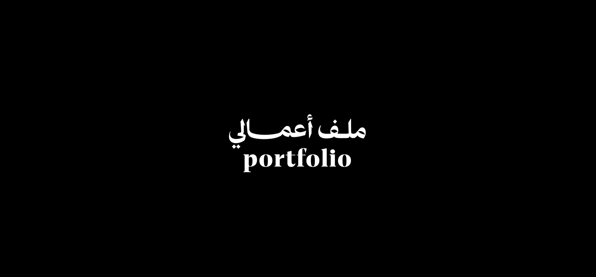

Fatima Abdul Salam Aboud
Basra, Iraq | Phone: 07713171625 | Email: fatima.apob@gmail.com
Professional Summary
Motivated Computer Education graduate with strong computer and administrative skills. Experienced in preparing educational materials, organizing information, and communicating with clients and students. Passionate about technology and committed to providing high‑quality customer support and professional service.
Key Skills
Technical skills
- html
- php
- Bootstrap
- Flutter
- Dart
- Problem Solving
- Microsoft Office (Word, Excel, PowerPoint)
- Data Entry
- Technology Application
Communication skills
- Customer Support
- Verbal and Written Communication
Education
Bachelor of Computer Education University of Basra – College of Education for Pure Sciences
Work Experience
Freelance Educational Content Designer – Basra | 2022–Present
- Designing educational study guides and learning materials
- Preparing and formatting academic research papers
- Managing digital files and educational content
Teacher – Al‑Hashimiyah Girls School
- Preparing and delivering lessons
- Supporting students academically
- Preparing educational assignments and materials
Administrative Assistant – Al‑Aleem Private School
- Managing documentation and records
- Supporting teachers and administrative staff
- Communicating with students and parents when needed
For Certificates and Courses